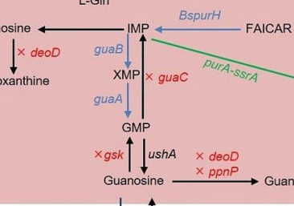

ppnP (PP_4248) encodes a broad-specificity pyrimidine/purine nucleoside phosphorylase (EC 2.4.2.1, EC 2.4.2.2) of the cupin-fold PpnP family. It catalyzes reversible phosphorolysis of diverse purine and pyrimidine nucleosides (uridine, adenosine, guanosine, cytidine, thymidine, inosine, xanthosine), yielding the free nucleobase plus alpha-D-ribose 1-phosphate, and functions in cytoplasmic nucleoside salvage/catabolism. The KT2440 enzyme itself has not been biochemically characterized; the functional assignment rests on HAMAP-Rule MF_01537 and falcon family/ortholog evidence rather than direct experimental proof.
| GO Term | Evidence | Action | Reason |
|---|---|---|---|
|
GO:0004731
purine-nucleoside phosphorylase activity
|
IEA
GO_REF:0000120 |
ACCEPT |
Summary: Purine-nucleoside phosphorylase activity is one of PpnP's supported substrate activities.
Reason: UniProt describes phosphorolysis of purine ribonucleosides including adenosine, guanosine, inosine, and xanthosine. Falcon family/ortholog evidence independently describes PpnP as a broad-specificity enzyme acting on purine nucleosides.
Supporting Evidence:
file:PSEPK/ppnP/ppnP-uniprot.txt
a purine D-ribonucleoside + phosphate
file:PSEPK/ppnP/ppnP-goa.tsv
GO:0004731 purine-nucleoside phosphorylase activity
file:PSEPK/ppnP/ppnP-deep-research-falcon.md
is explicitly described as a broad-specificity pyrimidine/purine nucleoside phosphorylase in bacterial purine salvage context
|
|
GO:0004850
uridine phosphorylase activity
|
IEA
GO_REF:0000116 |
ACCEPT |
Summary: Uridine phosphorylase activity is directly supported by the UniProt/Rhea reaction list.
Reason: PpnP can use uridine as substrate; this is one of the broad pyrimidine activities of the enzyme.
Supporting Evidence:
file:PSEPK/ppnP/ppnP-uniprot.txt
uridine + phosphate = alpha-D-ribose 1-phosphate + uracil
file:PSEPK/ppnP/ppnP-goa.tsv
GO:0004850 uridine phosphorylase activity
file:PSEPK/ppnP/ppnP-deep-research-falcon.md
PpnP is explicitly reported to act on multiple nucleosides, including
|
|
GO:0005829
cytosol
|
IEA
GO_REF:0000118 |
KEEP AS NON CORE |
Summary: Cytosol is plausible context but not the core function.
Reason: PpnP is reviewed as a soluble nucleoside phosphorylase; localization is inferred (TreeGrafter IEA) and falcon likewise infers cytoplasmic localization from salvage pathway architecture, so it should remain non-core.
Supporting Evidence:
file:PSEPK/ppnP/ppnP-goa.tsv
GO:0005829 cytosol
file:PSEPK/ppnP/ppnP-deep-research-falcon.md
because nucleosides are first imported by membrane transporters and PpnP products feed intracellular regulation/metabolism
|
|
GO:0009032
thymidine phosphorylase activity
|
IEA
GO_REF:0000116 |
ACCEPT |
Summary: Thymidine phosphorylase activity is directly supported by the UniProt/Rhea reaction list.
Reason: PpnP can use thymidine as substrate; deoxynucleoside phosphorolysis is part of the broad PpnP activity.
Supporting Evidence:
file:PSEPK/ppnP/ppnP-uniprot.txt
thymidine + phosphate = 2-deoxy-alpha-D-ribose 1-phosphate
file:PSEPK/ppnP/ppnP-goa.tsv
GO:0009032 thymidine phosphorylase activity
|
|
GO:0016154
pyrimidine-nucleoside phosphorylase activity
|
IEA
GO_REF:0000120 |
ACCEPT |
Summary: Pyrimidine-nucleoside phosphorylase activity is supported by PpnP's broad pyrimidine substrate range.
Reason: UniProt lists cytidine, thymidine, and uridine phosphorolysis (EC 2.4.2.2). Falcon independently describes PpnP as a broad-specificity pyrimidine/purine nucleoside phosphorylase. This is one of the two core enzymatic activities.
Supporting Evidence:
file:PSEPK/ppnP/ppnP-uniprot.txt
Can use uridine,
file:PSEPK/ppnP/ppnP-goa.tsv
GO:0016154 pyrimidine-nucleoside phosphorylase activity
file:PSEPK/ppnP/ppnP-deep-research-falcon.md
that cleaves nucleosides with phosphate to yield a nucleobase and D-ribose-1-phosphate
|
|
GO:0047975
guanosine phosphorylase activity
|
IEA
GO_REF:0000116 |
ACCEPT |
Summary: Guanosine phosphorylase activity is directly supported by the UniProt/Rhea reaction list.
Reason: PpnP can use guanosine as substrate. Falcon notes that in metabolic-engineering studies ppnP is treated as one of the guanosine phosphorylases in guanosine degradation, consistent with this activity.
Supporting Evidence:
file:PSEPK/ppnP/ppnP-uniprot.txt
guanosine + phosphate = alpha-D-ribose 1-phosphate + guanine
file:PSEPK/ppnP/ppnP-goa.tsv
GO:0047975 guanosine phosphorylase activity
file:PSEPK/ppnP/ppnP-deep-research-falcon.md
its deletion measurably increases nucleoside product titres in industrially relevant fermentation contexts
|
|
GO:0009164
nucleoside catabolic process
|
IEA
GO_REF:0000120 |
NEW |
Summary: PpnP should be connected to nucleoside catabolism because it phosphorolyzes diverse purine and pyrimidine nucleosides.
Reason: The fetched GOA table has multiple substrate-specific nucleoside phosphorylase molecular-function rows but no biological-process annotation. GO:0009164 captures the catabolic process implied by broad nucleoside phosphorolysis. Falcon confirms a catabolic role downstream of nucleoside uptake (producing bases plus ribose-1-phosphate) and notes that ppnP deletion increases nucleoside titres in fermentation, evidencing its role as a catabolic sink. UniProt also notes reverse reactions, but the phosphorolytic/catabolic direction is the principal process represented here; GO:0009116 nucleoside metabolic process would be broader and less informative.
Supporting Evidence:
file:PSEPK/ppnP/ppnP-uniprot.txt
Catalyzes the phosphorolysis of diverse nucleosides
file:PSEPK/ppnP/ppnP-uniprot.txt
D-ribose 1-phosphate and the respective free bases
file:PSEPK/ppnP/ppnP-deep-research-falcon.md
downstream of nucleoside uptake, producing bases and ribose-1-phosphate for reuse
|
Q: Which nucleosides dominate PpnP flux in KT2440 under nutrient scavenging or stationary-phase conditions?
Experiment: Measure purified PpnP kinetics across purine and pyrimidine nucleosides and profile nucleoside utilization in a ppnP knockout.
Type: enzyme substrate panel and growth/metabolite assay
This report is retrieval-only and is generated directly from Asta results.
search_papers_by_relevance with snippet_search.The research report should be a detailed narrative explaining the function, biological processes, and localization of the gene product. Citations should be given for all claims.
You should prioritize authoritative reviews and primary scientific literature when conducting research. You can supplement
this with annotations you find in gene/protein databases, but these can be outdated or inaccurate.
We are specifically interested in the primary function of the gene - for enzymes, what reaction is catalyzed, and what is the substrate specificity? For transporters, what is the substrate? For structural proteins or adapters, what is the broader structural role? For signaling molecules, what is the role in the pathway.
We are interested in where in or outside the cell the gene product carries out its function.
We are also interested in the signaling or biochemical pathways in which the gene functions. We are less interested in broad pleiotropic effects, except where these elucidate the precise role.
Include evidence where possible. We are interested in both experimental evidence as well as inference from structure, evolution, or bioinformatic analysis. Precise studies should be prioritized over high-throughput, where available.
The UniProt target (Q88F51) is annotated as a pyrimidine/purine nucleoside phosphorylase (often abbreviated PPNP or PpnP), i.e., an enzyme that performs phosphorolysis of nucleosides to generate α-D-ribose-1-phosphate plus a free nucleobase. This is distinct from the unrelated enzyme polynucleotide phosphorylase (PNPase; gene symbol commonly pnp), which acts on RNA and is frequently confused due to the similar abbreviation “PNP”. The defining PPNP chemistry (nucleoside + phosphate → ribose-1-phosphate + base) is explicitly described for PPNP/cupin-family proteins (lee2017backbonenmrassignments pages 1-2), and PpnP is explicitly described as a broad-specificity pyrimidine/purine nucleoside phosphorylase in bacterial purine salvage context (rodionova2021identificationofa pages 1-2).
Evidence gap note (KT2440/Q88F51-specific): within the retrieved full-text corpus for this run, no primary study explicitly mentions PP_4248, UniProt Q88F51, or directly biochemically characterizes the P. putida KT2440 enzyme (e.g., purified enzyme kinetics/structures or knockout phenotypes). Therefore, organism-specific claims below are framed as family- and ortholog-supported inference, not direct KT2440 experimental proof (rodionova2021identificationofa pages 1-2, lee2017backbonenmrassignments pages 1-2).
Nucleoside phosphorylases catalyze phosphorolysis of the N-glycosidic bond in nucleosides, using inorganic phosphate to produce α-D-ribose-1-phosphate plus the corresponding nucleobase (lee2017backbonenmrassignments pages 1-2). This reaction positions nucleoside phosphorylases as central components of nucleoside salvage, allowing cells to:
- recycle bases back into nucleotide pools via salvage enzymes, and
- channel ribose-1-phosphate into broader metabolism.
A commonly cited example is inosine phosphorolysis:
inosine + phosphate → hypoxanthine + D-ribose-1-phosphate (rodionova2021identificationofa pages 1-2).
Purine nucleoside phosphorylase (PNP) enzymes have been described as using an SN1-like mechanism with an oxocarbenium-like transition state; in some systems, “arsenolysis” can be used experimentally to probe the reaction coordinate (chaikuad2009conservationofstructure pages 1-3). While that work is not on Pseudomonas, it provides authoritative mechanistic context for nucleoside phosphorylase catalysis (chaikuad2009conservationofstructure pages 1-3).
A bacterial protein proposed to have pyrimidine/purine nucleoside phosphorylase activity (E. coli YaiE) was structurally characterized as a cupin-family protein with a β-barrel (jelly-roll-like) fold (lee2017backbonenmrassignments pages 1-2). This supports the interpretation that PpnP-family nucleoside phosphorylases can be cupin-like enzymes, consistent with a “cupin/jelly-roll” domain architecture (lee2017backbonenmrassignments pages 1-2).
PpnP is described as a broad-specificity pyrimidine/purine nucleoside phosphorylase that cleaves nucleosides with phosphate to yield a nucleobase and D-ribose-1-phosphate (rodionova2021identificationofa pages 1-2).
In a bacterial salvage/regulation context, PpnP is explicitly reported to act on multiple nucleosides, including:
inosine, uridine, adenosine, guanosine, cytidine, thymidine, and xanthosine (rodionova2021identificationofa pages 1-2).
For P. putida KT2440 Q88F51, the most defensible conclusion from the available evidence is that the enzyme’s primary role is broad nucleoside phosphorolysis in purine/pyrimidine salvage, and that its substrate range is likely broad in a similar manner, because this broad specificity is a defining feature attributed to PpnP (rodionova2021identificationofa pages 1-2).
PpnP participates in purine/pyrimidine salvage downstream of nucleoside uptake, producing bases and ribose-1-phosphate for reuse (rodionova2021identificationofa pages 1-2, rodionova2021identificationofa pages 2-3).
A mechanistic/regulatory model described in E. coli connects extracellular nucleosides to intracellular regulation: extracellular adenosine can be converted by adenosine deaminase (Add) to inosine, which is then cleaved by PpnP to produce hypoxanthine (rodionova2021anoveltranscription pages 4-6, rodionova2021identificationofa pages 2-3). Hypoxanthine (and guanine) acts as a cytoplasmic signal for the transcriptional regulator PurR, repressing de novo purine biosynthesis when salvage-derived purines are sufficient (rodionova2021anoveltranscription pages 4-6, rodionova2021anoveltranscription pages 1-4).
Although these regulatory details are shown in E. coli, they provide an expert-supported framework for interpreting why broad-specificity nucleoside phosphorylases matter physiologically: they tie nutrient scavenging to purine homeostasis through a metabolite-sensing regulator (rodionova2021anoveltranscription pages 4-6, rodionova2021identificationofa pages 2-3).
Comparative genomics in a purine/nucleoside uptake study reported conserved regulator/operator motifs and homologs “in various groups of Enterobacteria and Pseudomonas spp.” (rodionova2021identificationofa pages 3-5), and also discussed a Pseudomonas simiae PunC homolog relevant to adenine utilization (rodionova2021identificationofa pages 2-3). This does not directly establish ppnP regulation in P. putida KT2440, but supports that the broader ecological niche of purine/nucleoside uptake and salvage is conserved in pseudomonads (rodionova2021identificationofa pages 3-5, rodionova2021identificationofa pages 2-3).
Direct subcellular localization of Q88F51 was not found in the retrieved sources. However, pathway organization strongly suggests cytoplasmic function: nucleosides are imported by membrane transporters and then processed into hypoxanthine and ribose-1-phosphate, with hypoxanthine acting as a cytoplasmic regulatory signal (PurR effector) (rodionova2021anoveltranscription pages 4-6, rodionova2021identificationofa pages 2-3). Thus, the most evidence-consistent annotation is intracellular (cytosolic) enzyme participating in salvage metabolism rather than a secreted/periplasmic activity (rodionova2021anoveltranscription pages 4-6, rodionova2021identificationofa pages 2-3).
A 2024 metabolic-engineering study in E. coli treated ppnP as one of the guanosine phosphorylases in guanosine degradation (along with deoD) and deleted it to block product catabolism (zhang2024efficientproductionof pages 4-6). Quantitatively, after 72 h fermentation:
- Deleting deoD alone produced 13.1 mg/L guanosine (strain MQ9) (zhang2024efficientproductionof pages 4-6).
- Additional deletions including ppnP and gsk increased titres; e.g., strains after ppnP/gsk knockouts reached 16.2 mg/L and 23.2 mg/L (zhang2024efficientproductionof pages 4-6).
- A triple deletion (ΔdeoD ΔppnP Δgsk) produced 41.5 mg/L guanosine (MQ19), reported as a 78.9% increase vs a comparator strain (zhang2024efficientproductionof pages 4-6, zhang2024efficientproductionof pages 6-10).
- The final engineered strain achieved 134.9 mg/L guanosine, and 289.8 mg/L after 72 h in fed-batch shake-flask fermentation (zhang2024efficientproductionof pages 1-3).
These results demonstrate a concrete, real-world implementation: ppnP function is sufficiently central to nucleoside catabolism that its deletion measurably increases nucleoside product titres in industrially relevant fermentation contexts (zhang2024efficientproductionof pages 4-6, zhang2024efficientproductionof pages 1-3).
Visual evidence: the extracted figure panels show ppnP/deoD/gsk in guanosine catabolism and the corresponding titre changes across engineered strains (zhang2024efficientproductionof media f444095c, zhang2024efficientproductionof media 6bf8db44).
A 2023 JBC study on Trichomonas vaginalis highlights how nucleoside transport and intracellular salvage enzymes integrate to maintain nucleotide pools, including nucleoside phosphorylase directionality considerations and coupling to ribose-1-phosphate (patrone2023aribosidehydrolase pages 1-2). While not about bacterial PpnP specifically, it reinforces the broader contemporary view that salvage pathways are shaped by transporter availability and intracellular metabolite constraints (patrone2023aribosidehydrolase pages 1-2).
The following table captures the strongest retrieved evidence elements while explicitly flagging what is inference versus direct KT2440 validation.
| Claim/annotation element | Best-supported evidence snippet (paraphrased) | Organism context | Publication (with year, journal) | URL/DOI | Citation ID |
|---|---|---|---|---|---|
| Verified identity / disambiguation | PpnP is a pyrimidine/purine nucleoside phosphorylase that cleaves nucleosides with phosphate to yield a free base plus α-D-ribose-1-phosphate; this distinguishes it from unrelated polynucleotide phosphorylase (pnp/PNPase) RNA enzymes. | Broad bacterial PPNP concept; relevant for annotating P. putida Q88F51 by family | Lee et al., 2017, Journal of the Korean Magnetic Resonance Society | https://doi.org/10.6564/jkmrs.2017.21.2.050 | (lee2017backbonenmrassignments pages 1-2) |
| Core reaction | Example reaction given for PpnP: inosine + phosphate → hypoxanthine + D-ribose-1-phosphate; this is the canonical phosphorolysis chemistry expected for the family. | Escherichia coli pathway context; used as closest characterized ortholog evidence | Rodionova et al., 2021, Communications Biology | https://doi.org/10.1038/s42003-021-02516-0 | (rodionova2021identificationofa pages 1-2) |
| Substrate specificity | PpnP is described as broad-specificity, acting not only on inosine but also uridine, adenosine, guanosine, cytidine, thymidine, and xanthosine. | E. coli ortholog/pathway context; supports broad-substrate annotation of Q88F51 family | Rodionova et al., 2021, Communications Biology | https://doi.org/10.1038/s42003-021-02516-0 | (rodionova2021identificationofa pages 1-2) |
| Structural family / fold | A putative PPNP cupin protein (YaiE) was characterized as a cupin-family protein with a β-barrel / jelly-roll-like fold, supporting assignment of PpnP-family enzymes to a cupin-like structural class. | E. coli YaiE as structural proxy for PPNP family; aligns with UniProt domain calls for Q88F51 | Lee et al., 2017, Journal of the Korean Magnetic Resonance Society | https://doi.org/10.6564/jkmrs.2017.21.2.050 | (lee2017backbonenmrassignments pages 1-2) |
| Mechanistic context | Nucleoside phosphorylases catalyze phosphorolysis through an SN1-like mechanism with an oxocarbenium-like transition state; broad-specificity purine nucleoside phosphorylases are central to salvage metabolism. | General nucleoside phosphorylase enzymology; family-level support | Chaikuad & Brady, 2009, BMC Structural Biology | https://doi.org/10.1186/1472-6807-9-42 | (chaikuad2009conservationofstructure pages 1-3) |
| Pathway role | PpnP functions in purine/pyrimidine salvage downstream of nucleoside uptake; imported nucleosides are cleaved into reusable bases plus ribose-1-phosphate. | E. coli salvage network; conservative pathway inference for P. putida Q88F51 | Rodionova et al., 2021, Communications Biology | https://doi.org/10.1038/s42003-021-02516-0 | (rodionova2021identificationofa pages 1-2, rodionova2021identificationofa pages 2-3) |
| Regulatory integration | In extracellular adenosine utilization, Add converts adenosine to inosine, then PpnP generates hypoxanthine, which acts as a cytoplasmic signal for PurR-mediated repression of de novo purine biosynthesis and some transport genes. | E. coli regulatory model; indicates how PpnP activity can couple salvage to transcriptional control | Rodionova et al., 2021, Communications Biology; Rodionova et al., 2021, preprint | https://doi.org/10.1038/s42003-021-02516-0 ; https://doi.org/10.21203/rs.3.rs-146218/v1 | (rodionova2021anoveltranscription pages 4-6, rodionova2021identificationofa pages 2-3) |
| Likely localization | Although direct localization was not experimentally shown for Q88F51, pathway organization implies cytoplasmic localization, because nucleosides are first imported by membrane transporters and PpnP products feed intracellular regulation/metabolism. | Inference from bacterial salvage pathway architecture | Rodionova et al., 2021, Communications Biology | https://doi.org/10.1038/s42003-021-02516-0 | (rodionova2021identificationofa pages 1-2, rodionova2021identificationofa pages 2-3) |
| Pseudomonas-related comparative context | Comparative genomics in a purine/nucleoside uptake study identified conserved PunR/PunC-related motifs in Pseudomonas spp., indicating that the broader uptake/salvage framework linked to PpnP is conserved in pseudomonads, though Q88F51 itself was not directly tested. | Pseudomonas spp. comparative genomics, not direct P. putida KT2440 biochemistry | Rodionova et al., 2021, Communications Biology | https://doi.org/10.1038/s42003-021-02516-0 | (rodionova2021identificationofa pages 3-5, rodionova2021identificationofa pages 2-3) |
| Application / real-world implementation | In metabolic engineering for guanosine production, ppnP deletion was used to block guanosine catabolism; a strain with ΔdeoD ΔppnP Δgsk reached 41.5 mg/L guanosine after 72 h, and the final optimized strain reached 289.8 mg/L in fed-batch shake-flask fermentation. | E. coli biotechnology implementation showing ppnP as a catabolic nucleoside phosphorylase target | Zhang et al., 2024, Microbial Cell Factories | https://doi.org/10.1186/s12934-024-02452-8 | (zhang2024efficientproductionof pages 4-6, zhang2024efficientproductionof pages 10-13, zhang2024efficientproductionof pages 1-3) |
| Visual pathway/quantitation support | Extracted figure panels show deoD, ppnP, and gsk on the guanosine catabolic map and the associated titre increases after their deletion, providing compact visual support for ppnP’s catabolic role. | E. coli engineering figure evidence | Zhang et al., 2024, Microbial Cell Factories | https://doi.org/10.1186/s12934-024-02452-8 | (zhang2024efficientproductionof media f444095c, zhang2024efficientproductionof media 6bf8db44) |
| Evidence-gap note for Q88F51 | No retrieved primary study directly characterized PP_4248 / UniProt Q88F51 in Pseudomonas putida KT2440; therefore annotation should be treated as family-based inference supported by ortholog and pathway evidence, not direct KT2440 biochemical proof. | P. putida KT2440 specific evidence gap | No direct retrieved paper for Q88F51/PP_4248 | N/A | (rodionova2021identificationofa pages 1-2, lee2017backbonenmrassignments pages 1-2) |
Table: This table summarizes the strongest retrieved evidence relevant to annotating ppnP/PpnP for UniProt Q88F51 in Pseudomonas putida KT2440. It emphasizes what is directly supported by family-level and ortholog data, while explicitly noting the absence of a retrieved Q88F51-specific biochemical study.
Because direct biochemical/physiological studies for Q88F51/PP_4248 were not retrieved here, the report’s KT2440-specific claims remain inferred from family/ortholog literature (rodionova2021identificationofa pages 1-2). For definitive annotation, the strongest next steps would be (i) targeted retrieval of P. putida KT2440 genome-scale metabolic/gene essentiality resources mentioning PP_4248, and/or (ii) enzymatic characterization of the purified protein to quantify kcat/KM across nucleoside substrates and confirm oligomeric state and active-site residues.
References
(lee2017backbonenmrassignments pages 1-2): Sung-Hee Lee, Dae-Won Sim, Eun-Hee Kim, Ji-Hun Kim, and Hyung-Sik Won. Backbone nmr assignments and secondary structure determination of a cupin-family protein yaie from escherichia coli. Journal of the Korean magnetic resonance society, 21:50-54, Jun 2017. URL: https://doi.org/10.6564/jkmrs.2017.21.2.050, doi:10.6564/jkmrs.2017.21.2.050. This article has 0 citations.
(rodionova2021identificationofa pages 1-2): Irina A. Rodionova, Ye Gao, Anand Sastry, Ying Hefner, Hyun Gyu Lim, Dmitry A. Rodionov, Milton H. Saier, and Bernhard O. Palsson. Identification of a transcription factor, punr, that regulates the purine and purine nucleoside transporter punc in e. coli. Communications Biology, Aug 2021. URL: https://doi.org/10.1038/s42003-021-02516-0, doi:10.1038/s42003-021-02516-0. This article has 26 citations and is from a peer-reviewed journal.
(chaikuad2009conservationofstructure pages 1-3): Apirat Chaikuad, Apirat Chaikuad, and R. L. Brady. Conservation of structure and activity in plasmodium purine nucleoside phosphorylases. BMC Structural Biology, 9:42-42, Jul 2009. URL: https://doi.org/10.1186/1472-6807-9-42, doi:10.1186/1472-6807-9-42. This article has 23 citations and is from a peer-reviewed journal.
(rodionova2021identificationofa pages 2-3): Irina A. Rodionova, Ye Gao, Anand Sastry, Ying Hefner, Hyun Gyu Lim, Dmitry A. Rodionov, Milton H. Saier, and Bernhard O. Palsson. Identification of a transcription factor, punr, that regulates the purine and purine nucleoside transporter punc in e. coli. Communications Biology, Aug 2021. URL: https://doi.org/10.1038/s42003-021-02516-0, doi:10.1038/s42003-021-02516-0. This article has 26 citations and is from a peer-reviewed journal.
(rodionova2021anoveltranscription pages 4-6): Irina Rodionova, Ye Gao, Anand Sastry, Ying Hefner, Reo Yoo, Dmitry Rodionov, Milton Saier, and Bernhard Palsson. A novel transcription factor punr and nac are involved in purine and purine nucleoside transporter punc regulation in e. coli. ArXiv, Feb 2021. URL: https://doi.org/10.21203/rs.3.rs-146218/v1, doi:10.21203/rs.3.rs-146218/v1. This article has 3 citations.
(rodionova2021anoveltranscription pages 1-4): Irina Rodionova, Ye Gao, Anand Sastry, Ying Hefner, Reo Yoo, Dmitry Rodionov, Milton Saier, and Bernhard Palsson. A novel transcription factor punr and nac are involved in purine and purine nucleoside transporter punc regulation in e. coli. ArXiv, Feb 2021. URL: https://doi.org/10.21203/rs.3.rs-146218/v1, doi:10.21203/rs.3.rs-146218/v1. This article has 3 citations.
(rodionova2021identificationofa pages 3-5): Irina A. Rodionova, Ye Gao, Anand Sastry, Ying Hefner, Hyun Gyu Lim, Dmitry A. Rodionov, Milton H. Saier, and Bernhard O. Palsson. Identification of a transcription factor, punr, that regulates the purine and purine nucleoside transporter punc in e. coli. Communications Biology, Aug 2021. URL: https://doi.org/10.1038/s42003-021-02516-0, doi:10.1038/s42003-021-02516-0. This article has 26 citations and is from a peer-reviewed journal.
(zhang2024efficientproductionof pages 4-6): Kun Zhang, Mengxing Qin, Yu Hou, Wenwen Zhang, Zhenyu Wang, and Hailei Wang. Efficient production of guanosine in escherichia coli by combinatorial metabolic engineering. Microbial Cell Factories, Jun 2024. URL: https://doi.org/10.1186/s12934-024-02452-8, doi:10.1186/s12934-024-02452-8. This article has 13 citations and is from a peer-reviewed journal.
(zhang2024efficientproductionof pages 6-10): Kun Zhang, Mengxing Qin, Yu Hou, Wenwen Zhang, Zhenyu Wang, and Hailei Wang. Efficient production of guanosine in escherichia coli by combinatorial metabolic engineering. Microbial Cell Factories, Jun 2024. URL: https://doi.org/10.1186/s12934-024-02452-8, doi:10.1186/s12934-024-02452-8. This article has 13 citations and is from a peer-reviewed journal.
(zhang2024efficientproductionof pages 1-3): Kun Zhang, Mengxing Qin, Yu Hou, Wenwen Zhang, Zhenyu Wang, and Hailei Wang. Efficient production of guanosine in escherichia coli by combinatorial metabolic engineering. Microbial Cell Factories, Jun 2024. URL: https://doi.org/10.1186/s12934-024-02452-8, doi:10.1186/s12934-024-02452-8. This article has 13 citations and is from a peer-reviewed journal.
(zhang2024efficientproductionof media f444095c): Kun Zhang, Mengxing Qin, Yu Hou, Wenwen Zhang, Zhenyu Wang, and Hailei Wang. Efficient production of guanosine in escherichia coli by combinatorial metabolic engineering. Microbial Cell Factories, Jun 2024. URL: https://doi.org/10.1186/s12934-024-02452-8, doi:10.1186/s12934-024-02452-8. This article has 13 citations and is from a peer-reviewed journal.
(zhang2024efficientproductionof media 6bf8db44): Kun Zhang, Mengxing Qin, Yu Hou, Wenwen Zhang, Zhenyu Wang, and Hailei Wang. Efficient production of guanosine in escherichia coli by combinatorial metabolic engineering. Microbial Cell Factories, Jun 2024. URL: https://doi.org/10.1186/s12934-024-02452-8, doi:10.1186/s12934-024-02452-8. This article has 13 citations and is from a peer-reviewed journal.
(patrone2023aribosidehydrolase pages 1-2): Marco Patrone, Gregory S. Galasyn, Fiona Kerin, Mattias M. Nyitray, David W. Parkin, Brian J. Stockman, and Massimo Degano. A riboside hydrolase that salvages both nucleobases and nicotinamide in the auxotrophic parasite trichomonas vaginalis. Journal of Biological Chemistry, 299:105077, Sep 2023. URL: https://doi.org/10.1016/j.jbc.2023.105077, doi:10.1016/j.jbc.2023.105077. This article has 3 citations and is from a domain leading peer-reviewed journal.
(zhang2024efficientproductionof pages 10-13): Kun Zhang, Mengxing Qin, Yu Hou, Wenwen Zhang, Zhenyu Wang, and Hailei Wang. Efficient production of guanosine in escherichia coli by combinatorial metabolic engineering. Microbial Cell Factories, Jun 2024. URL: https://doi.org/10.1186/s12934-024-02452-8, doi:10.1186/s12934-024-02452-8. This article has 13 citations and is from a peer-reviewed journal.

id: Q88F51
gene_symbol: ppnP
product_type: PROTEIN
status: DRAFT
taxon:
id: NCBITaxon:160488
label: Pseudomonas putida (strain ATCC 47054 / DSM 6125 / CFBP 8728 / NCIMB 11950 / KT2440)
description: ppnP (PP_4248) encodes a broad-specificity pyrimidine/purine nucleoside phosphorylase (EC 2.4.2.1, EC 2.4.2.2) of the cupin-fold PpnP family. It catalyzes reversible phosphorolysis of diverse purine and pyrimidine nucleosides (uridine, adenosine, guanosine, cytidine, thymidine, inosine, xanthosine), yielding the free nucleobase plus alpha-D-ribose 1-phosphate, and functions in cytoplasmic nucleoside salvage/catabolism. The KT2440 enzyme itself has not been biochemically characterized; the functional assignment rests on HAMAP-Rule MF_01537 and falcon family/ortholog evidence rather than direct experimental proof.
existing_annotations:
- term:
id: GO:0004731
label: purine-nucleoside phosphorylase activity
evidence_type: IEA
original_reference_id: GO_REF:0000120
review:
summary: Purine-nucleoside phosphorylase activity is one of PpnP's supported substrate activities.
action: ACCEPT
reason: UniProt describes phosphorolysis of purine ribonucleosides including adenosine, guanosine, inosine, and xanthosine. Falcon family/ortholog evidence independently describes PpnP as a broad-specificity enzyme acting on purine nucleosides.
supported_by:
- reference_id: file:PSEPK/ppnP/ppnP-uniprot.txt
supporting_text: a purine D-ribonucleoside + phosphate
- reference_id: file:PSEPK/ppnP/ppnP-goa.tsv
supporting_text: "GO:0004731\tpurine-nucleoside phosphorylase activity"
- reference_id: file:PSEPK/ppnP/ppnP-deep-research-falcon.md
supporting_text: is explicitly described as a broad-specificity pyrimidine/purine nucleoside phosphorylase in bacterial purine salvage context
- term:
id: GO:0004850
label: uridine phosphorylase activity
evidence_type: IEA
original_reference_id: GO_REF:0000116
review:
summary: Uridine phosphorylase activity is directly supported by the UniProt/Rhea reaction list.
action: ACCEPT
reason: PpnP can use uridine as substrate; this is one of the broad pyrimidine activities of the enzyme.
supported_by:
- reference_id: file:PSEPK/ppnP/ppnP-uniprot.txt
supporting_text: uridine + phosphate = alpha-D-ribose 1-phosphate + uracil
- reference_id: file:PSEPK/ppnP/ppnP-goa.tsv
supporting_text: "GO:0004850\turidine phosphorylase activity"
- reference_id: file:PSEPK/ppnP/ppnP-deep-research-falcon.md
supporting_text: PpnP is explicitly reported to act on multiple nucleosides, including
- term:
id: GO:0005829
label: cytosol
evidence_type: IEA
original_reference_id: GO_REF:0000118
review:
summary: Cytosol is plausible context but not the core function.
action: KEEP_AS_NON_CORE
reason: PpnP is reviewed as a soluble nucleoside phosphorylase; localization is inferred (TreeGrafter IEA) and falcon likewise infers cytoplasmic localization from salvage pathway architecture, so it should remain non-core.
supported_by:
- reference_id: file:PSEPK/ppnP/ppnP-goa.tsv
supporting_text: "GO:0005829\tcytosol"
- reference_id: file:PSEPK/ppnP/ppnP-deep-research-falcon.md
supporting_text: because nucleosides are first imported by membrane transporters and PpnP products feed intracellular regulation/metabolism
- term:
id: GO:0009032
label: thymidine phosphorylase activity
evidence_type: IEA
original_reference_id: GO_REF:0000116
review:
summary: Thymidine phosphorylase activity is directly supported by the UniProt/Rhea reaction list.
action: ACCEPT
reason: PpnP can use thymidine as substrate; deoxynucleoside phosphorolysis is part of the broad PpnP activity.
supported_by:
- reference_id: file:PSEPK/ppnP/ppnP-uniprot.txt
supporting_text: thymidine + phosphate = 2-deoxy-alpha-D-ribose 1-phosphate
- reference_id: file:PSEPK/ppnP/ppnP-goa.tsv
supporting_text: "GO:0009032\tthymidine phosphorylase activity"
- term:
id: GO:0016154
label: pyrimidine-nucleoside phosphorylase activity
evidence_type: IEA
original_reference_id: GO_REF:0000120
review:
summary: Pyrimidine-nucleoside phosphorylase activity is supported by PpnP's broad pyrimidine substrate range.
action: ACCEPT
reason: UniProt lists cytidine, thymidine, and uridine phosphorolysis (EC 2.4.2.2). Falcon independently describes PpnP as a broad-specificity pyrimidine/purine nucleoside phosphorylase. This is one of the two core enzymatic activities.
supported_by:
- reference_id: file:PSEPK/ppnP/ppnP-uniprot.txt
supporting_text: Can use uridine,
- reference_id: file:PSEPK/ppnP/ppnP-goa.tsv
supporting_text: "GO:0016154\tpyrimidine-nucleoside phosphorylase activity"
- reference_id: file:PSEPK/ppnP/ppnP-deep-research-falcon.md
supporting_text: that cleaves nucleosides with phosphate to yield a nucleobase and D-ribose-1-phosphate
- term:
id: GO:0047975
label: guanosine phosphorylase activity
evidence_type: IEA
original_reference_id: GO_REF:0000116
review:
summary: Guanosine phosphorylase activity is directly supported by the UniProt/Rhea reaction list.
action: ACCEPT
reason: PpnP can use guanosine as substrate. Falcon notes that in metabolic-engineering studies ppnP is treated as one of the guanosine phosphorylases in guanosine degradation, consistent with this activity.
supported_by:
- reference_id: file:PSEPK/ppnP/ppnP-uniprot.txt
supporting_text: guanosine + phosphate = alpha-D-ribose 1-phosphate + guanine
- reference_id: file:PSEPK/ppnP/ppnP-goa.tsv
supporting_text: "GO:0047975\tguanosine phosphorylase activity"
- reference_id: file:PSEPK/ppnP/ppnP-deep-research-falcon.md
supporting_text: its deletion measurably increases nucleoside product titres in industrially relevant fermentation contexts
- term:
id: GO:0009164
label: nucleoside catabolic process
evidence_type: IEA
original_reference_id: GO_REF:0000120
review:
summary: PpnP should be connected to nucleoside catabolism because it phosphorolyzes diverse purine and pyrimidine nucleosides.
action: NEW
reason: The fetched GOA table has multiple substrate-specific nucleoside phosphorylase molecular-function rows but no biological-process annotation. GO:0009164 captures the catabolic process implied by broad nucleoside phosphorolysis. Falcon confirms a catabolic role downstream of nucleoside uptake (producing bases plus ribose-1-phosphate) and notes that ppnP deletion increases nucleoside titres in fermentation, evidencing its role as a catabolic sink. UniProt also notes reverse reactions, but the phosphorolytic/catabolic direction is the principal process represented here; GO:0009116 nucleoside metabolic process would be broader and less informative.
supported_by:
- reference_id: file:PSEPK/ppnP/ppnP-uniprot.txt
supporting_text: Catalyzes the phosphorolysis of diverse nucleosides
- reference_id: file:PSEPK/ppnP/ppnP-uniprot.txt
supporting_text: D-ribose 1-phosphate and the respective free bases
- reference_id: file:PSEPK/ppnP/ppnP-deep-research-falcon.md
supporting_text: downstream of nucleoside uptake, producing bases and ribose-1-phosphate for reuse
references:
- id: GO_REF:0000116
title: Automatic Gene Ontology annotation based on Rhea mapping
findings: []
- id: GO_REF:0000118
title: TreeGrafter-generated GO annotations
findings: []
- id: GO_REF:0000120
title: Combined Automated Annotation using Multiple IEA Methods
findings: []
- id: file:PSEPK/ppnP/ppnP-uniprot.txt
title: UniProtKB reviewed entry for ppnP
findings:
- supporting_text: Catalyzes the phosphorolysis of diverse nucleosides, yielding
- supporting_text: adenosine, guanosine, cytidine, thymidine, inosine and xanthosine as
- supporting_text: Belongs to the nucleoside phosphorylase PpnP family
- id: file:PSEPK/ppnP/ppnP-goa.tsv
title: QuickGO GOA annotations for ppnP
findings:
- supporting_text: purine-nucleoside phosphorylase activity
- supporting_text: pyrimidine-nucleoside phosphorylase activity
- id: file:interpro/panther/PTHR36540/PTHR36540-metadata.yaml
title: PANTHER family metadata for ppnP
findings:
- supporting_text: 'name: PYRIMIDINE/PURINE NUCLEOSIDE PHOSPHORYLASE'
- id: file:PSEPK/ppnP/ppnP-deep-research-falcon.md
title: Falcon deep research on ppnP (Edison Scientific Literature)
findings:
- statement: PpnP is a broad-specificity pyrimidine/purine nucleoside phosphorylase catalyzing phosphorolysis of nucleosides to yield a free nucleobase plus alpha-D-ribose 1-phosphate, supporting purine and pyrimidine salvage.
supporting_text: is explicitly described as a broad-specificity pyrimidine/purine nucleoside phosphorylase in bacterial purine salvage context
- statement: The phosphorolysis chemistry cleaves the nucleoside N-glycosidic bond using inorganic phosphate, generating a nucleobase and ribose 1-phosphate.
supporting_text: that cleaves nucleosides with phosphate to yield a nucleobase and D-ribose-1-phosphate
- statement: PpnP has a broad substrate range across purine and pyrimidine nucleosides.
supporting_text: 'inosine, uridine, adenosine, guanosine, cytidine, thymidine, and xanthosine'
- statement: PpnP acts in purine/pyrimidine salvage downstream of nucleoside uptake, producing reusable bases plus ribose 1-phosphate.
supporting_text: downstream of nucleoside uptake, producing bases and ribose-1-phosphate for reuse
- statement: In metabolic engineering, ppnP deletion increases nucleoside (guanosine) titres, evidencing its role as a catabolic sink for nucleosides.
supporting_text: its deletion measurably increases nucleoside product titres in industrially relevant fermentation contexts
- statement: Pathway organization implies a cytoplasmic site of action, as nucleosides are imported by membrane transporters and PpnP products feed intracellular metabolism.
supporting_text: because nucleosides are first imported by membrane transporters and PpnP products feed intracellular regulation/metabolism
- statement: The KT2440 enzyme (PP_4248 / Q88F51) has not been directly biochemically characterized; the functional assignment is a family/ortholog-supported inference.
supporting_text: organism-specific claims below are framed as
- statement: No retrieved primary study directly characterizes the P. putida KT2440 enzyme.
supporting_text: no primary study explicitly mentions
core_functions:
- description: Broad-specificity phosphorolysis of purine ribonucleosides (adenosine, guanosine, inosine, xanthosine), cleaving the N-glycosidic bond with inorganic phosphate to yield the free purine base plus alpha-D-ribose 1-phosphate for salvage.
molecular_function:
id: GO:0004731
label: purine-nucleoside phosphorylase activity
directly_involved_in:
- id: GO:0009164
label: nucleoside catabolic process
supported_by:
- reference_id: file:PSEPK/ppnP/ppnP-uniprot.txt
supporting_text: Catalyzes the phosphorolysis of diverse nucleosides
- reference_id: file:PSEPK/ppnP/ppnP-uniprot.txt
supporting_text: Can use uridine,
- reference_id: file:PSEPK/ppnP/ppnP-deep-research-falcon.md
supporting_text: is explicitly described as a broad-specificity pyrimidine/purine nucleoside phosphorylase in bacterial purine salvage context
- description: Broad-specificity phosphorolysis of pyrimidine nucleosides (uridine, cytidine, thymidine), yielding the free pyrimidine base plus (deoxy)ribose 1-phosphate; the complementary half of PpnP's broad nucleoside salvage activity.
molecular_function:
id: GO:0016154
label: pyrimidine-nucleoside phosphorylase activity
directly_involved_in:
- id: GO:0009164
label: nucleoside catabolic process
supported_by:
- reference_id: file:PSEPK/ppnP/ppnP-uniprot.txt
supporting_text: Can use uridine,
- reference_id: file:PSEPK/ppnP/ppnP-deep-research-falcon.md
supporting_text: that cleaves nucleosides with phosphate to yield a nucleobase and D-ribose-1-phosphate
proposed_new_terms: []
suggested_questions:
- question: Which nucleosides dominate PpnP flux in KT2440 under nutrient scavenging or stationary-phase conditions?
suggested_experiments:
- description: Measure purified PpnP kinetics across purine and pyrimidine nucleosides and profile nucleoside utilization in a ppnP knockout.
experiment_type: enzyme substrate panel and growth/metabolite assay
{kind=link}